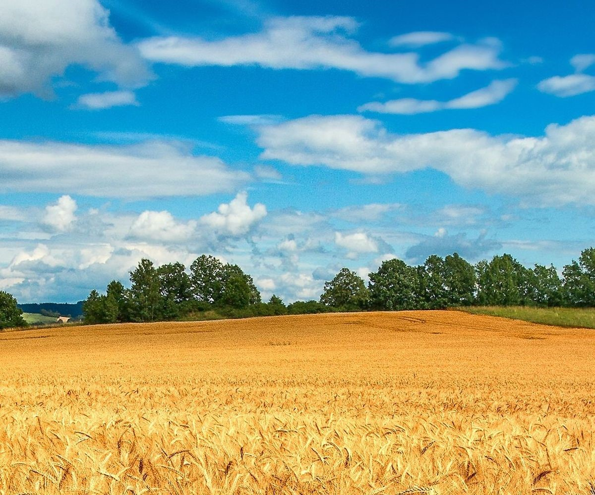
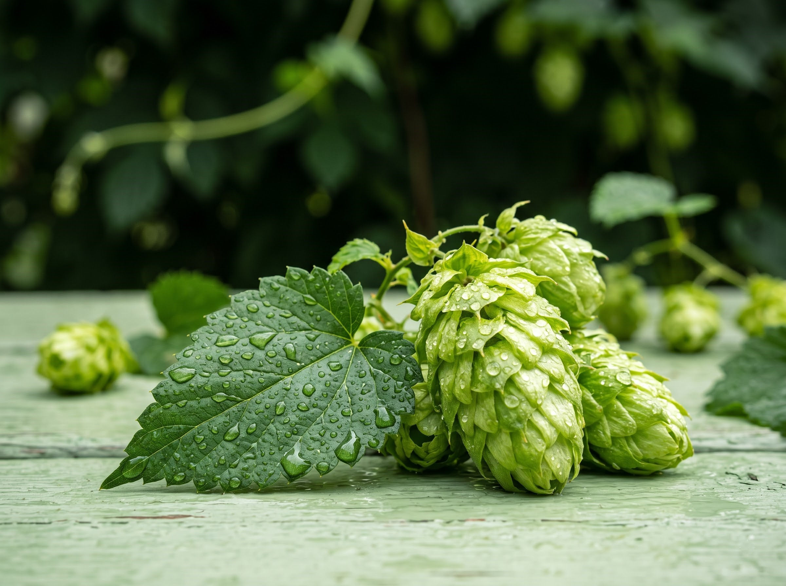
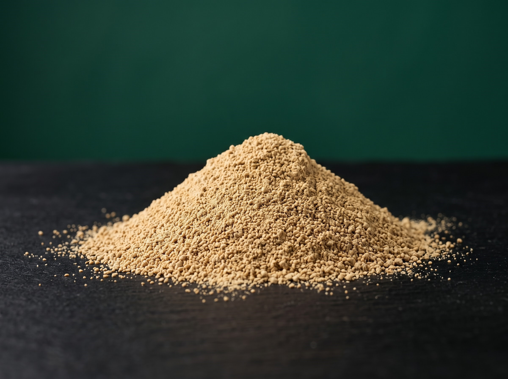

우리는 맥주를 통해
한국의 풍토를 말합니다
보리에서 맥주까지 이어지는 로컬 산업의 중심 브루어리 곡우는
봄비가 내려 백곡을 기름지게 한다는 절기 '곡우(穀雨)'와
양조장을 뜻하는 ‘Brewery’를 합쳐 계절의 흐름과 농부의
땀방울이 만들어낸 정직한 원료,
자연의 깊은 풍미를 그대로 담아내는 양조 철학을 전달합니다.

보리
KOREAN BARLEY
국내 최초로 지역산 보리를 가공해 수제 맥주용 맥아를 생산 · 공급하는
전문 시설(군산맥아)을 갖추고 있으며,
군산 수제맥주 페스티벌 등을 통해 국내 맥주 산업의 중심지 역할을 하고 있습니다.

홉
KOREAN HOPS
대한민국 홉 재배의 역사적 중심지 강원도 홍천. 매서운 강원의 겨울을 이겨내는
강인한 내한성으로, 우리 땅에 단단히 뿌리내린 토종 홉의 정통성을 이어갑니다.
물
DEEP ROCK WATER
양조의 90%는 물입니다. 곡우는 대관령 자락 지하 200미터 암반수를 사용하며,
맥주 스타일마다 미네랄 프로필을 다시 설계해 라거에는 부드럽게, 에일에는 단단하게 만듭니다.

효모
KOREAN YEAST
한국 전통 누룩과 과수원에서 분리한 토종 균주 중 발효력이 안정된 두 균주를
하우스 효모로 길러냅니다.
라거의 깨끗한 피니시, 에일의 은근한 과실향은 이 균주들의 서명입니다.
여섯 번의 공정, 30일의 숙성
MALTING
재맥국산 보리를 물에 불려 싹을 틔운 뒤, 저온에서 말려 맥아의 성격을 결정합니다.
MASHING
당화분쇄한 맥아를 암반수와 섞어 온도 램프로 올립니다. 전분이 당으로 바뀌는 구간입니다.
BOLING
자비 • 홉 투입맥즙을 끓이며 쓴맛을 내기 위해 초반에 넣고, 풍부한 향을 살리기 위해 후반에도 넣어 총 두 번을 넣습니다.
FERMENTING
발효하우스 효모가 당을 먹고 알코올과 향을 만듭니다. 곡우에서 가장 시끄럽고 아름다운 시간.
LAGERING
저온 숙성0°C에 가깝게 온도를 낮춰 효모와 입자를 가라앉힙니다. 기다림이 맛의 결을 만듭니다.
PACKAGING
병입산소 접촉을 최소화하며 병에 담습니다. 출하 전 모든 배치의 관능 검사를 거칩니다.
“좋은 맥주는 재료가 좋고,
좋은 재료는 땅이 좋다는 증거입니다.”
- 브루어리 곡우 팀 첫 배치 노트 중 -
TAST THE RESULT한 잔의 깊이를 더하는 오브제.
맥주의 아로마와 거품을 가장 잘 살려주는 맥주잔과 정갈한 코스터 컬렉션을 만나보세요.